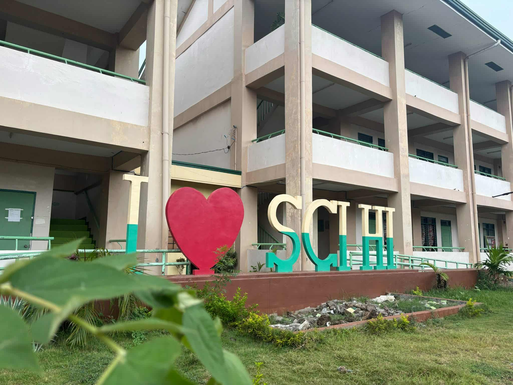

Bais City National Science High School stands out as a place deeply committed to nurturing its students’ scientific and mathematical potential. With its science-high school curriculum aligned to the Department of Education’s rigorous standards, the school ensures that learners don’t just learn theory but are challenged to apply concepts through inquiry, experimentation, and research. From junior high to senior high school, students are guided by teachers who are passionate about STEM; they are always ready to lend a hand both in classroom lectures and in real-world applications.

Photo by Laurence Pagador
Photo by Christian Acojedo

Photo by Southern Sky Media
Beyond academics, the environment at BCNSHS is warm and supportive. The campus is known for being well kept and conducive to learning—classrooms with adequate lighting, science labs (where experimental work can be done), quiet study areas, and outdoor spaces for relaxation or group study. Students are generally friendly, collaborative, and eager to help one another. There is a sense of community: peer-learning, group projects, and mentoring are common; students don’t just see each other as competitors but as companions in growth.